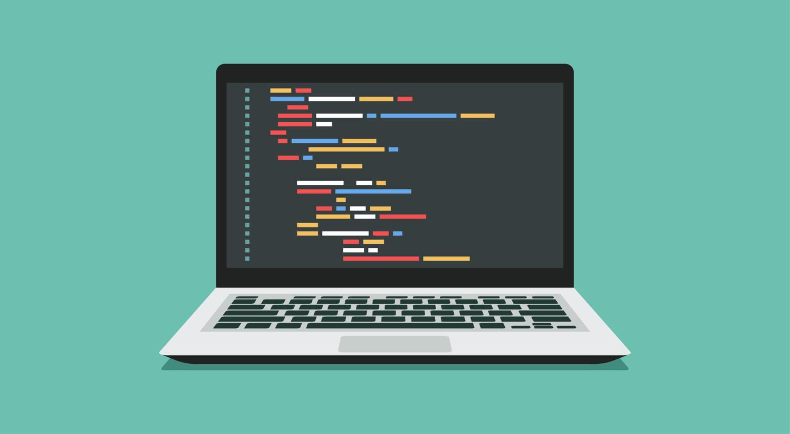

|
Website NaufalBelajar, berkembang, dan berkarya melalui teknologi.
|
|
| Beranda | Tentang Saya | Kampusku | Syair Lagu | |
BeritaPerkembangan Teknologi InformasiSenin, 5 Oktober 2026 Perkembangan teknologi informasi semakin pesat dan memberikan banyak perubahan dalam kehidupan sehari-hari. Teknologi saat ini digunakan untuk membantu manusia dalam berkomunikasi, belajar, bekerja, dan mendapatkan informasi dengan lebih mudah dan cepat. Internet menjadi salah satu bagian penting dalam perkembangan teknologi informasi. Dengan adanya internet, seseorang dapat mengakses berbagai informasi dari berbagai tempat hanya melalui komputer atau perangkat lainnya. Hal ini juga membuat proses pembelajaran menjadi lebih mudah karena banyak sumber belajar yang dapat digunakan secara online. Selain untuk pendidikan, teknologi informasi juga banyak digunakan dalam dunia pekerjaan dan bisnis. Berbagai pekerjaan dapat dilakukan dengan bantuan komputer dan aplikasi digital. Oleh karena itu, kemampuan dalam memahami teknologi menjadi salah satu hal yang penting untuk menghadapi perkembangan zaman. Dengan memanfaatkan teknologi secara bijak, kita dapat memperoleh banyak manfaat dan meningkatkan kemampuan untuk menghadapi kebutuhan di masa depan. Belajar Pemrograman untuk Masa DepanRabu, 7 Oktober 2026  Pemrograman merupakan salah satu kemampuan yang semakin banyak dipelajari seiring dengan berkembangnya teknologi. Dengan pemrograman, seseorang dapat membuat berbagai macam program, website, aplikasi, dan sistem yang dapat membantu menyelesaikan berbagai kebutuhan. Dalam mempelajari pemrograman, seseorang perlu memahami dasar-dasar logika dan cara kerja sebuah program. Proses belajar dapat dimulai dari bahasa pemrograman sederhana, kemudian dilanjutkan dengan mempelajari konsep yang lebih kompleks secara bertahap. Selain dapat digunakan untuk membuat sebuah aplikasi, pemrograman juga dapat membantu meningkatkan kemampuan berpikir secara logis dan sistematis. Ketika menemukan masalah dalam sebuah program, seorang programmer perlu mencari penyebab dan menentukan solusi yang tepat. Dengan belajar secara rutin dan terus mencoba membuat berbagai proyek, kemampuan pemrograman dapat berkembang. Keterampilan ini juga dapat menjadi bekal untuk menghadapi perkembangan teknologi dan kebutuhan dunia kerja di masa depan. |
Tautan Eksternal |
| © Copyright Naufal Abiyu Rifdan, 2026. | |